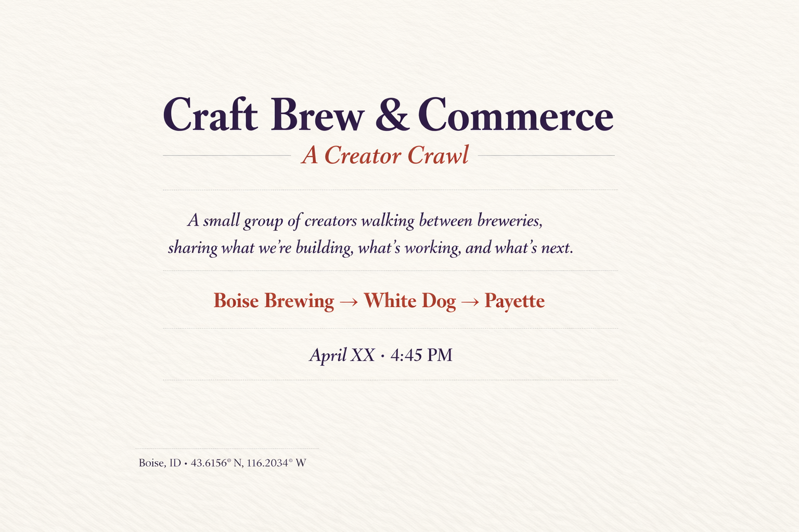

Who it’s for
Creators, founders, writers, developers, operators, and curious builders who want a sharper conversation than the hotel hallway usually delivers.
Pre-conference side event
A Creator Crawl
A small group of creators walking between breweries, sharing what we’re building, what’s working, and what’s next.

The pitch
This is a creator-native micro-experience for people building something real. We’ll meet downtown, grab a first pint, and then move together through a compact Boise route built for conversation instead of logistics. No panels. No awkward badge small talk. Just builders talking to builders.
The structure is intentionally light: one drink or flight per stop, roughly twenty-five minutes at each brewery, and a steady prompt that gets people talking about their actual work. Everyone pays their own tab. Comfortable shoes matter more than business cards.
Creators, founders, writers, developers, operators, and curious builders who want a sharper conversation than the hotel hallway usually delivers.
Stop 1: what are you building right now? Stop 2: what’s working? Stop 3: what’s next? Simple prompts, better conversations.
Designed for two hours, expandable to three only if the group is genuinely rolling. Tight enough to feel curated, not chaotic.
The route
Reserve your spot
Use the styled form below as your visual target. In production, replace the placeholder block with your Kit embed code so signups flow directly into your event tag and automations. Kit’s form builder provides embeddable HTML from Grow → Landing Pages & Forms → Embed. citeturn141752search3
Recommended Kit setup
Form name: Craft Brew & Commerce RSVP. Fields: first name, email, and optional “What are you building?” Create a tag like boise-crawl-2026 and trigger confirmation, day-of reminder, and post-event follow-up automations from that tag.
RSVP
Date TBD · Downtown Boise
Useful extras
The “Add to calendar” button generates a downloadable ICS file from your site configuration, so GitHub Pages or GitLab Pages can host the whole experience without any server work.
Every stop has its own directions link, plus a full-route map for people who arrive late or peel off early.
This build is plain HTML, CSS, and JavaScript. Drop it into any static host, point your new domain, and you are live.